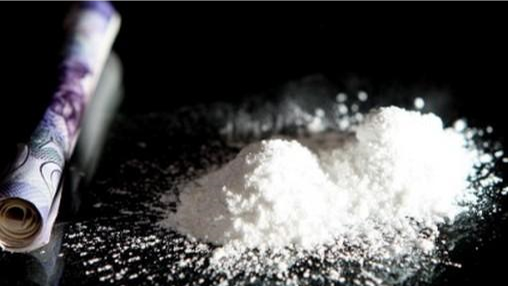

可卡因：飘飘欲仙的潮饮
令人飘飘欲仙的可卡因实验，西格蒙德·弗洛伊德，可卡因牙痛滴露，可口可乐
- 可卡因——“街头毒品中的鱼子酱”，这个星球上最受欢迎的消遣性毒品之一——至少在公元前3000年就被作为兴奋剂使用。可卡因是从原产于南美洲安第斯山脉的古柯属植物古柯树中被提取出来的。这种植物看起来非常普通，几乎透着无辜和天真。它不过是灌木植物海洋中一种普普通通的灌木。这种小灌木种在你的后院中做绿化也不会显得特别，但它却创造了难以计数的财富，同时也毁灭了难以计数的生命。
- 可卡因的使用流行于知识分子、艺术家、作家和其他依赖大脑高度运转来进行创作的人中间。19世纪，极力倡导将可卡因当作兴奋剂使用的人中，最知名的一位应该是西格蒙得·弗洛伊德，他在二三十岁的时候对可卡因彻底上瘾。1851年，弗洛伊德在“左鼻孔被可卡因麻痹”之后，给一个同事写信说：“在过去几天中，我的感觉好得难以置信，就仿佛一切都被清零了……我感觉非常美妙，仿佛从来没有做过任何不对的事情。”40岁的时候，弗洛伊德戒了可卡因，随后，他写出了他的心理学代表作，成为家喻户晓的名人。不过，学者们依然在争论，弗洛伊德的可卡因瘾是否对他后期理念中蕴含的才华有长期影响。
- 一个名叫威廉·斯图尔特·霍尔斯特德的年轻美国医生（他因创立了约翰·霍普金斯医院和在乳房根治术方面的成就而知名）读到了科勒的实验，自己也尝试了一下，然后开始使用可卡因来减轻牙科手术中的疼痛，并且在自己的研究生身上练习麻醉技术（可以肯定，他们都因为获得被实验的特权而非常感谢他）。自然而然地，可卡因因其缓解疼痛的能力，受到了19世纪末和20世纪初迅速兴起的专利药生产商们的热烈欢迎。在很多流行的药剂中，可卡因都是主要原料，比方罗杰氏可卡因痔疮修复药、劳埃德可卡因牙痛滴露（消费者们相信这些药品实际上并不包含任何会令人上瘾的药物）。
- 由于可卡因深受专利药行业的欢迎，含可卡因的药水开始随处可见。就以名字诱人的“古柯牛肉水”来说，这种药水意欲成为肉的代替品。如果你买不起一片美味的菲力牛排，那你可以挤出几便士来，买上一份牛肉味的饮料。这份弥补你缺少肉食食谱的药水，包含了可卡因和23%的酒精。在抗击饥饿方面，真的很少有东西能够和酩酊大醉同时飘飘欲仙相提并论。
- 今天，可口可乐中实际上也含有古柯树叶的提取物，只是没有使人“愉快”的那种。尽管确切的配方是一个严密保护的商业机密，但是该公司的确从秘鲁国立古柯公司合法进口古柯树叶。可卡因被提取出来，作为局部麻醉剂卖给眼科和耳鼻喉科专家做药品，而古柯树叶剩余的芬芳便被封存到秘密配方当中。所以，尽管你不能再合法地饮用含可卡因的酒，但知道饮料史上最成功的传奇，提神的冰可乐的味道中依然有古柯树叶的痕迹，依然是挺让人开心的。每一罐可乐中所包含的历史小细节，都将你与人类使用可卡因爽翻天的历史联系在了一起。